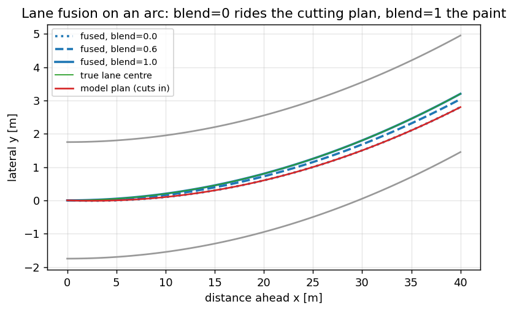

Путь разметки — из двух линий и плана в одну опору#
Планировщик не рулит на линии разметки и не рулит на план вождения модели. Он рулит на одну
полилинию в vision/path, а она — слияние того и другого, вычисляемое каждый кадр зрения в
laneLinesToPath (utils/lane_path.cpp, зеркало на Python core/path_fusion.py). Эта глава — про это
слияние: что на входе, как решается вес и от каких двух отказов оно спасает. Это последнее, что
происходит до контроллеров, и здесь решается примерно половина измеренного смещения
от центра.
Два источника, и почему ни одного не хватает#
источник |
откуда |
сила |
режим отказа |
|---|---|---|---|
линии разметки |
|
геометрический центр этой полосы |
одна пропадает; σ взрывается на дугах и в дождь |
план модели |
|
всегда есть, всегда гладкий |
срезает внутрь дуги — систематическое смещение уставки |
Линии правы, когда есть, и лгут, когда пропадают. План есть всегда и всегда чуть неправ на дугах. Слияние — не «на всякий случай», а использование каждого ровно там, где отказывает другой.
Как читаются линии: что значит «ближняя левая»#
Supercombo отдаёт четыре линии; стек берёт две линии своей полосы, lanes[1] и lanes[2], на той же
продольной сетке, что и план (lanes(1).y_size() == nx — страж в lane_path.cpp: линия на другой
сетке считается отсутствующей, а не пересемплируется). Каждая линия несёт вероятность и поточечное
стандартное отклонение; слияние сводит кривую σ к одному числу — медиане по ближнему полю, потому что
именно на этом диапазоне контроллер и действует.
import numpy as np
def line_std(y_std, x, lo=5.0, hi=40.0):
"""One confidence number per line: median σ over the range the controller uses."""
sel = (x >= lo) & (x <= hi)
return float(np.median(y_std[sel])) if sel.any() else float("nan")
x = np.arange(0.0, 60.0, 2.0)
sigma_near = 0.05 + 0.01 * x # grows with range, as real lane σ does
print(f"median σ over 5-40 m: {line_std(sigma_near, x):.2f} m")
Два гейта и вес#
Линия попадает в опору через два независимых теста, затем участвует по весу:
вероятность, смягчённая, чтобы линия чуть выше порога не прыгала на полный вес:
def soft_prob(p, min_p=0.3):
if p < min_p:
return 0.0
return min(1.0, (p - min_p) / max(1e-3, 1.0 - min_p))
σ-уверенность — полный вес до
lane_std_good_m(0.15 м), линейно до нуля кlane_std_bad_m(0.30 м). Это собственные полосыlaneLineStdscomma: ниже 0.15 м модель уверена настолько, насколько вообще бывает, выше 0.30 м — гадает:
def std_conf(median_std, good=0.15, bad=0.30):
if median_std < 0:
return 1.0
if median_std <= good:
return 1.0
if median_std >= bad:
return 0.0
return (bad - median_std) / (bad - good)
ширина — паре доверяют (заякорена) только когда обе линии прошли и их медианная разница лежит в [2.6, 4.6] м. Стык гудрона или полоса слияния обычно ломают ширину, так что одна дешёвая проверка отсекает самый частый вход «уверенно, но неверно».
Слияние и единственная важная ручка#
Заякорено, центр полосы — взвешенная по вероятности середина двух линий (каждая сдвинута внутрь на
половину измеренной ширины), а вес подмешивания — flowpilot-подобное ИЛИ двух вероятностей,
масштабированное path_lane_blend_scale:
def blend_reference(x, y_plan, y_L, y_R, p_L, p_R,
std_L=0.1, std_R=0.1, blend_scale=0.6,
w_min=2.6, w_max=4.6):
"""Fuse lines and plan into one y(x). Device frame, y right-positive."""
p_L = soft_prob(p_L) * std_conf(std_L)
p_R = soft_prob(p_R) * std_conf(std_R)
sel = (x >= 5.0) & (x <= 40.0)
w_med = float(np.mean(np.abs(y_R[sel] - y_L[sel]))) if sel.any() else 0.0
anchored = (w_min < w_med < w_max) and p_L > 0 and p_R > 0
d_prob = (p_L + p_R - p_L * p_R) * blend_scale if anchored else 0.0
w = np.clip(np.abs(y_L - y_R), w_min, w_max)
y_lane = (p_L * (y_L + 0.5 * w) + p_R * (y_R - 0.5 * w)) / (p_L + p_R + 1e-6)
return d_prob * y_lane + (1.0 - d_prob) * y_plan, d_prob, anchored
# The plan cuts 40 cm inside by 40 m; the paint is centred.
x = np.linspace(0, 40, 21)
y_plan = -0.40 * (x / 40.0)
y_L, y_R = -1.75 * np.ones_like(x), 1.75 * np.ones_like(x)
for scale in (0.0, 0.6, 1.0):
y, d, ok = blend_reference(x, y_plan, y_L, y_R, 0.95, 0.95, blend_scale=scale)
print(f"blend={scale:.1f} anchored={ok} d_prob={d:.2f} y(40)={y[-1]:+.3f} m")
blend=0 едет по срезающему плану до −0.40 м; blend=1 сидит на центрированной разметке; боевые
0.6 держат 40 % внутренней срезки плана даже при идеальных линиях. Это намеренно: comma-two
доверяет разметке полностью при d_prob≈1, но на этом телефоне линии редко так хороши, поэтому
частичное подмешивание — честный компромисс.
{kind=link}

Рис. 20 На дуге план модели срезает внутрь; разметка сидит на истинном центре. blend=0 едет по плану,
blend=1 — по разметке, боевые 0.6 держат 40 % срезки.#

Рис. 21 Вес подмешивания по мере роста σ: за lane_std_bad_m (0.30 м) линии получают нулевой вес, а 0.37/0.51 м с
заезда лежат за краем.#
Почему смещение живёт именно здесь#
Два измеренных факта делают эту главу важнее её размера. На заезде 2026-08-21 медианная σ была 0.37 м
слева и 0.51 м справа — обе уже за краем нулевого веса 0.30 м, — и обе линии проходили гейты
одновременно лишь в ~22 % кадров. Так что большую часть времени d_prob схлопывается к нулю, и опора
есть план со всей его внутренней срезкой. Это σ-вето и винят примерно в половине смещения от центра
на дугах (открытая задача #39); поднимать path_lane_blend_scale бесполезно, пока σ в плохой полосе,
потому что вес и так ноль.
for sig in (0.12, 0.20, 0.37, 0.55):
_, d, _ = blend_reference(x, y_plan, y_L, y_R, 0.95, 0.95,
std_L=sig, std_R=sig, blend_scale=0.6)
print(f"σ={sig:.2f} m → d_prob={d:.2f} ({'lines help' if d > 0.05 else 'plan only'})")
После слияния применяется один постоянный сдвиг — path_camera_offset_m (0.05 м), остаток того, что
камера не сидит на осевой. На прямых остаточное смещение 3.6 см; на дугах — на порядок больше, и это
срезка плана, проступающая сквозь схлопнутое подмешивание, а не ошибка калибровки.
Приёмка#
перебор подмешивания воспроизводится:
blend=0едет по плану,blend=1по разметке,blend=0.6между;перебор σ показывает, как
d_probуходит в ноль, едва σ переваливает 0.30 м, — так что, зная 0.37 и 0.51 м с заезда, вы можете объяснить, почему линии обычно не участвуют;одно предложение, связывающее долю «обе уверены» ~22 % со смещением на дуге.
Куда дальше#
Зрение — обзор — откуда берутся σ и план, и четыре условия к опоре.
MPC и fp — контроллеры, которые потребляют эту полилинию.
utils/lane_path.cppиcore/path_fusion.py— боевое слияние и его офлайн-зеркало.
Дальше: MPC и fp